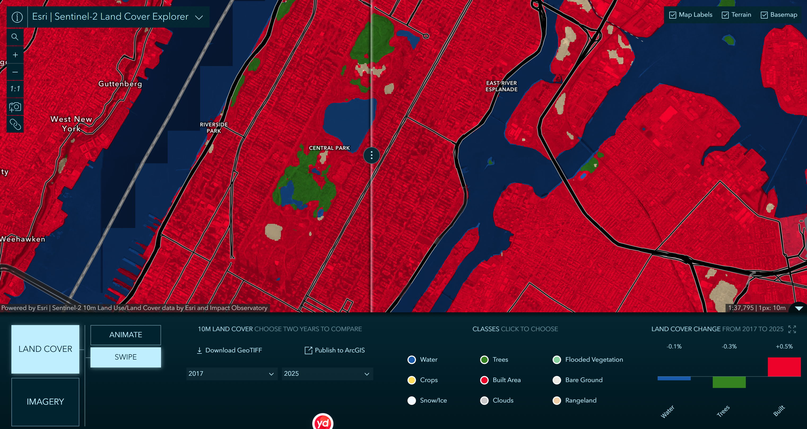
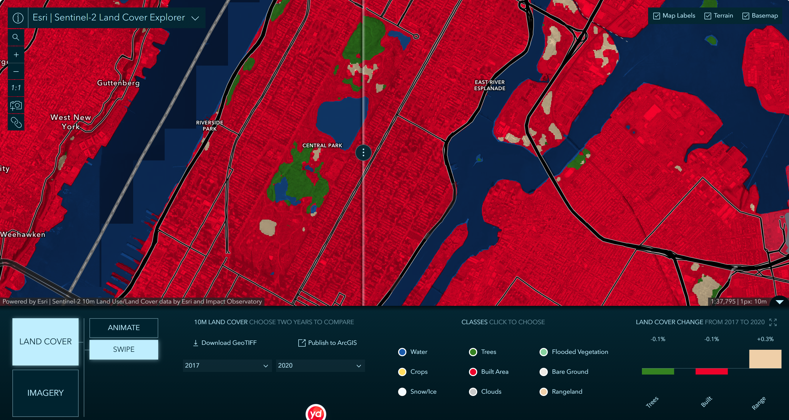

Week 06 · Oct 2026
Land Cover, Then and Now
The question
What was this land before it became parkland, and who gained when its use changed? And can a land cover map’s pattern and distribution of change show how that use is still changing today?
The data
Sentinel-2 10m Land Use/Land Cover Time Series, Esri and Impact Observatory, 10 m resolution, annual maps for 2017, 2020 and 2025, viewed in the Sentinel-2 Land Cover Explorer. Licence: Esri Master License Agreement; the source LULC data is CC BY 4.0. The product notes that the 2017 map is built from fewer images than later years.
The method
Extent: one fixed window of roughly 13 × 5 km, from the New Jersey waterfront (Guttenberg, West New York, Weehawken) across Upper Manhattan and Central Park to Randalls and Wards Islands and the Astoria shoreline. The map was not moved between readings. Scale: native resolution, 1 px : 10 m (1:37,795), for every year. I pushed the swipe handle to one edge to show each year in full.
Scale: native resolution, 1 px : 10 m (1:37,795), for every year.
Rendering: the same nine-class colours on both sides of the swipe.
Instrument: one product, one maker, one annual series.
Third date: I replaced 2025 with 2020 to test whether the 2017–2025 story held.
The evidence


Open this comparison in the Sentinel-2 Land Cover Explorer (2017 vs 2025, 1 px : 10 m)
What I found
Visible change. Built Area covers almost the whole window in every year. The change panel showed three classes: 2017→2025, Water −0.1%, Trees −0.3%, Built +0.5%; 2017→2020, Trees −0.2%, Built −0.1%, Rangeland +0.3%. The story did not survive the third date: Built Area falls by 2020, then rises by 2025. On the southern part of Randalls and Wards Islands, Rangeland patches present in 2017 and 2020 are Built Area in 2025. At the north end of Central Park, small Trees and Rangeland patches in 2017 are mostly Built Area by 2025. Across the park, only woods, lakes and a few lawns are anything but Built Area, and some small patches change class from year to year.
Suspected but cannot show. I suspect some of the year-to-year switching inside Central Park is the classifier changing its mind rather than the ground changing — lawns that look different from one year’s images to the next, or pixels mixing path, grass and trees. I cannot show this from the land cover map alone; it would need the imagery for each year.Inside Central Park, only the wooded areas and the water bodies show as Trees and Water; most of the park, including large lawns, is Built Area even in 2017. Some Trees and Rangeland pixels in the park become Built Area by 2025, and some switch back and forth between years.
What this does not show
I am using Sentinel-2 10 m land cover classes to stand for how land in Central Park and on Randalls Island is used, and it might fail because the class definitions put parks, yards and groves into Built Area, so a lawn, a tent and a building can be the same red pixel. Built +0.5% is also not evidence of construction: the panel subtracts two inventories over one window, so opposite changes cancel. Nothing here shows who uses these fields or who was moved.
AI use: ChatGPT checked the wording of this entry from my own readings, screenshots and notes.